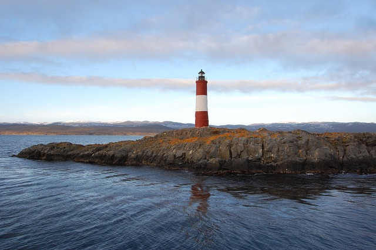

Ushuaia es la capital de la provincia de Tierra del Fuego, Antártida e Islas del Atlántico Sur y es conocida como la Ciudad del Fin del Mundo por ser la ciudad más austral del mundo.

La ciudad de Ushuaia es un destino turístico que atrae cada año a miles de viajeros de Argentina y de todo el mundo.
Guia para visitar Ushuaia
Plan para 3 dias
Canal de Beagle
Experimente para conocer puntos increíbles del fin del mundo sobre un yate Podrás observar y desembarcar en una de las magníficas islas de la ruta Y a lo largo del recorrido podrás conocer pinguinos, lobos marinos y el faro del fin del mundo.
Tren del fin del mundo
Disfruta de una excursión guiada de medio día desde Ushuaia al Parque Nacional de Tierra del Fuego y maravíllate con el impresionante paisaje Contemplando la vista y escuchando la historia a bordo del Tren del Fin del Mundo.
Laguna esmeralda
Explorar a pie garantiza ver la flora y fauna que hacen de Tierra del Fuego un lugar único, Es una caminata de poca complejidad en la cual se recorren valles, ríos, turbales y bosques fueguinos hasta llegar a la laguna Esmeralda.